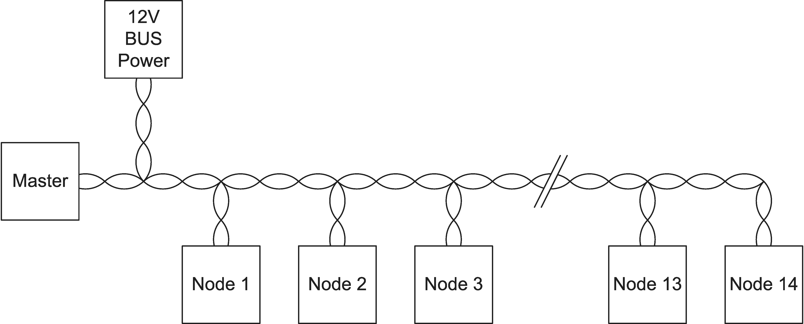
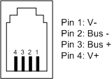
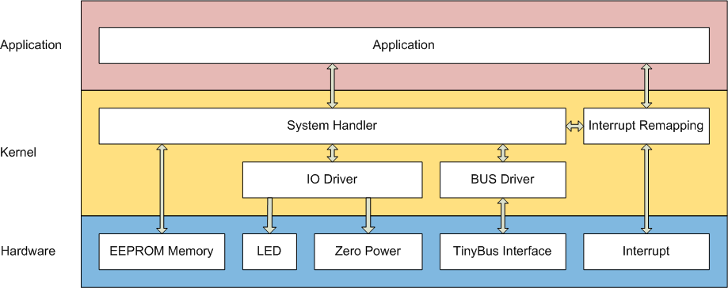

TinyBus
The TinyBus is a galvanically isolated, half-duplex, request-response, master-slave, low-speed bus.
It was primarily developed to enable easy and cheap, but reliable communication with small microcontrollers.
Key Features
- Half-duplex, bi-directional
- Galvanic isolation
- Polarity agnostic
- Hot plug capable
- Star, tree or bus topology
- Up to 14 devices per line
- Automatic baud rate detection
Motivation
TinyBus was developed to enable cheap and easy, galvanically isolated communication without a strict network topology.
Inspiration
TinyBus was partially inspired by the "Digital Addressable Lighting Interface" (DALI) and "Musical Instrument Digital Interface" (MIDI). However, neither the hardware nor software layer of TinyBus is compatible with DALI or MIDI.
The name TinyBus was chosen because it is a bus and was developed for Atmel Microchip AVR ATtiny microcontrollers.
Terminology
| TinyBus | This whole project including the hardware and software layer. |
|---|---|
| TinyLoader | The software part of this project |
| Kernel | Part of the firmware that boots the system, handles communication and runs the application. |
| Application | The user application. |
| Master | Dominant / authoritative entity on the bus. |
| Slave | Submissive entity on the bus. |
| Node | One entity on the bus. |
| Frame | Unit of data on the data link layer. |
| Packet | Unit of data on the network layer. |
| Message | Unit of data on the application layer. |
Requirement Levels
Requirement levels are denoted in accordance with RFC2119.
Numbering Format
Numbers are represented in decimal format. A complementary representation in an hexadecimal or binary form can be added next to the decimal representation. e.g. 85 (55h / 01010101b).
Topology
The TinyBus is a strictly master-slave, request-response based protocol.
Each bus consists of one bus power supply, one master node, and up to 14 slave nodes.
Addressing
The TinyBus supports up to 14 individually addressable devices plus one master-node.
Additionally, all nodes can be commanded simultaneously via a broadcast address.
Baud Rates
Each TinyBus node must support all eight specified baud rates.
Limitations
Empirical testing has shown that the highest realistically achievable standard baud rate is 14'400 baud. This was tested over multiple meters of cabling in a tree topology.
Idle state, power conservation and node wake-up
In idle state, the bus is logical high. This allows a node to detect if it is currently connected to an active bus.
If a node is disconnected or the bus becomes inactive, the node can enter standby or power down.
Wake-Up Signal
The "RX_RAW" signal (see Interface) can be used as wake-up signal.
The output of the optocoupler being open-collector and not reliant on any auxiliary voltage supply allows for a true zero standby power consumption design.
Electrical Characteristics and the Bus Power Supply
TinyBus is based on a current loop.
The loop current must be limited to approximately 80 mA. The open loop voltage must be limited to approximately 12V DC.
Interface

The above diagram shows the reference implementation of the interface of a TinyBus node.
Schematic Explanation
Note: Some of the components serve multiple purposes and are therefore reverenced multiple times.
R1, R2, D1, C1 - Protection and filtering
D1 is a transient surge arrestor. It will clamp short voltage spikes above approximatly 25V and thereby protects the following circuit.
R1, R2 and C1 form a low pass filter. It dampens the high-frequency content of the signal, thereby reducing conducted electromagnetic interference (EMI).
D2, D3 - Full Bridge Rectifier
D2 and D3 form a full bridge rectifier. This enables the polarity agnosticity of the TinyBus interface.
T1, R1,R2, R4, R5, IC2 - Transmitter
T1 in combination with IC2 forms the transmitter part of the interface.
R1 and R2 limit the maximum sink current of the transmitter.
R3, D2, D3, D4, IC1 - Receiver
D2, D3, D4 and the LED of IC1 have a combined forward voltage of approximately 7V. This value represents the threshold between a logical high and a low. R3 limits the forward current of IC1s LED to about 6mA.
Connectors and Pinout
TinyBus devices should use a 4P4C or 4P2C modular connector (commonly, but incorrectly, often referred to as RJ-10 connector).
For a bus-powered device the 4P4C modular connector must be used. For a not bus-powered device the 4P2C modular connector should be used.
This allows for easy identification of bus-powered and not bus-power devices by examining the connector.
Bus Power
Voltage: TBD
Max Current: TBD
Pinout
In case the 4P4C or 4P2C modular connector is used, the follwing pinout must be followed:
| Pin | Signal | Description |
|---|---|---|
| 1 | V- / GND | Optional, for bus powerd devices |
| 2 | Bus - | |
| 3 | Bus + | |
| 4 | V+ | Optional, for bus powered devices |
Cabling Requirements
Maximum Cable Length
TinyBus does not directly specifie a maximum cable length. The maximum cable length primarily depends on the cable's loop resistance.
Due to the current-loop-like operation of TinyBus, the resistance of the cable must not exceed a value causing a voltage drop of approximately 7V.
Considering the typical 100mA bus current and the 10 Ohms input resistance of a node, a loop resistance of approximately 60 Ohms must not be exceeded.
Data Link Layer
Framing
Both, the request and response, use the same frame format.
The framing is based on a modified version of the "Consistent Overhead Byte Stuffing" (COBS) algorithm. To enable auto baudrate detection, instead of 0 (0h), 85 (55h / 01010101b) is used as delimiter.
Each frame starts and ends with the delimiter byte.
Per packet, a maximum payload size of 20 bytes shall not be exceeded. Therefore, the maximum total frame lenght is 26 bytes.
| Data Link Layer (Frame) | ||||||
| Start Byte(0x55) | Overhead Byte | Instruction Byte | Payload | CRC16(High Byte) | CRC16(Low Byte) | End Byte(0x55) |
| Network Layer (Packet) | ||||||
Acknowledgment
Each valid frame sent to an individual device must be acknowledged by that device. Broadcast frames shall not be acknowledged.
The acknowledgment frame is constructed the same way as a regular data frame. The instruction byte shall be the same as it was in the request. If there is no data to be returned, the payload shall be left empty.
Non-Acknowledgment
A non-acknowledgment should be returned if an error on a higher layer (Network Layer or Application Layer) is detected.
Incorrect frames on the data link layer must not trigger a non-acknowledgment. Instead, the incorrect frame shall be ignored.
A non-acknowledgment uses the same frame format as an acknowledgment with the exception that no payload shall be returned and the CRC shall be set to 0.
CRC
The CRC16 uses an x16 + x12 + x5 + 1 polynomial (0x1021) initialized to 0xFFFF.
The CRC calculation includes the data contained in a network layer packet, namely the instruction byte and the payload bytes. The start-byte and stop-byte as well as the overhead-byte are not included in the CRC calculation.
Network Layer
Each packet contains an instruction and a payload.
| Network Layer (Packet) | |
| Instruction Byte | Payload |
| Application Layer (Message) | |
Instruction Byte
| Instruction Byte | |||||||
|---|---|---|---|---|---|---|---|
| Address (Upper Nibble) | Command (Lower Nibble) | ||||||
The instruction byte is split into two parts: the address (upper nibble) and the command (lower nibble).
Addressing
The 4-bit address range allows for addresses between 0 (0h) and 15 (Fh).
- 15 (Fh) is reserved as a broadcast address and cannot be used as an individual device address.
- 0 (0h) is the default address of an unconfigured device and should not be used in an installation.
The remaining address range of 1 (1h) to 14 (Eh) can be assigned freely.
Commands
The command ids 0-14 (0h-Eh) are application specific. For details on those commands see the respective application documentation.
The command 15 (Fh) is reserved for kernel communication.
| Command Id | Command | Payload | Reply (1) |
|---|---|---|---|
| 0-14 | Application Specific | Application Specific | Application Specific |
| 15 | Kernel Commands | Subcommand Specific | Subcommand Specific |
1) Only if individual addressed, broadcast messages get no reply.
Visual Indicators
Visual indicators can be used to indicate network activity.
The receive-indicator shall light up when a valid message with a matching address is received.
The transmit-indicator shall light up when a message starts being transmitted.
Colours
The indicator light for receiving shall be green while the indicator light for transmitting shall be red.
Application Layer
Starting the application
The application will only start if the application CRC is valid.
Application Autostart Disabled
The device will not run the application until either the "Start App" kernel command or a command other than a kernel command (Command Id 15) is received. Any application command (Command Id 0-14) will start the application.
Application Autostart Enabled
The device will run the application automatically as soon as the device is powerd-on.
In case a device reset is triggered due to a watchdog timeout, division-by-zero error, or similar the application should not autostart.
Stopping the application
To stop the execution of the application the "Stop App" kernel command can be sent.
Application Header
| Bit | 7 | 6 | 5 | 4 | 3 | 2 | 1 | 0 | |
|---|---|---|---|---|---|---|---|---|---|
| Byte | |||||||||
| 0 | Autostart | Reserved | Header Version | ||||||
| 1 | Reserved | ||||||||
| 2 | Major Firmware Version | ||||||||
| 3 | Minor Firmware Version | ||||||||
| 4 | Hardware Id (High) | ||||||||
| 5 | Hardware Id (Low) | ||||||||
| 6 | Major Hardware Version | ||||||||
| 7 | Minor Hardware Version | ||||||||
| 8-13 | Reserved | ||||||||
| 14-31 | Application Name | ||||||||
Autostart
If this bit is set, the application starts automatically on power-up
Minor Version
Major Version
Application Name
Kernel Communication
Each kernel command message is composed of a subcommand id and a payload.
| Application Layer (Message) | |
| Kernel Subcommand Id | Payload |
Note: In the response the most signifcant bit of the sub command id is set.
Subcommands
| Id | Name | Payload | Reply |
|---|---|---|---|
| 0 | Get Device State | Empty | Device State |
| 1 | Get Hardware Information | Empty | Hardware Information |
| 2 | Get Memory Information | Empty | Memory Information |
| 3 | Get App CRC | Empty | CRC of app sector |
| 4 | Erase App Section | Empty | Acknowledgment |
| 5 | Write Page | Write Address + Data | Acknowledgment |
| 6 | Write EEPROM | Page Address + Page Data | Acknowledgment |
| 7 | Read EEPROM | Byte Address + Read Size | EEPROM Data |
| 8 | Read RAM | Byte Address + Read Size | RAM Data |
| 10 | Reboot | Empty | None |
| 11 | Start App | Empty | Acknowledgment |
| 12 | Stop App | Empty | Acknowledgment |
| 13 | Get Application Name | Empty | Application Name |
| 14 | Get Application Version | Empty | Application Version |
| 15 | Set Address | New Address | Acknowledgment |
| 32 | Set Baud Rate | New Baud Rate | Acknowledgment |
| 33 | Save Baud Rate | Empty | Acknowledgment |
Command 0x00 - Get Device State
| Payload | Empty |
|---|---|
| Reply | Device State / non-acknowledgment |
| Error Handling | If the command exicution fails, a non-acknowledgment will be replied. |
This command will return a device state message.
Device State Message
| Index | Data | Size in Bytes | Description |
|---|---|---|---|
| 0:7-4 | Device Address | 0.5 | The address of the device |
| 0:3-0 | Device State | 0.5 | The state of the device |
Device State
The device state is a 4 bit number, representing the current state of the device.
| Index | State | Description |
|---|---|---|
| 0 | Unknown | The current device state is unknown |
| 1 | Checking CRC | The CRC calculation is currently running |
| 2 | CRC error | The application CRC is invalid |
| 3 | Application start | The application is starting |
| 4 | Application running | The application is running |
| 5 | Application shutdown | The application is shutting down |
| 6 | Application stopped | The application is stopped |
| 7 | Reserved |
Command 0x01 - Get Hardware Information
| Payload | Empty |
|---|---|
| Reply | Hardware Information / non-acknowledgment |
| Error Handling | If the command exicution fails, a non-acknowledgment will be replied. |
This command will return the hardware information table.
Hardware Information
| Index | Data | Size in Bytes | Description |
|---|---|---|---|
| 0-1 | Controller Id | 2 | Controller Id. See Processor Id Table |
| 2-3 | Hardware Id | 2 | |
| 4 | Major Hardware Revision | 1 | |
| 5 | Minor Hardware Revision | 1 | |
| 6 | Major Kernel Revision | 1 | |
| 7 | Minor Kernel Revision | 1 |
Command 0x02 - Get Memory Information
| Payload | Empty |
|---|---|
| Reply | Memory Information / non-acknowledgment |
| Error Handling | If the command exicution fails, a non-acknowledgment will be replied. |
This command will return the memory information table.
Memory Information
| Index | Data | Size in Bytes | Description |
|---|---|---|---|
| 0-1 | Flash size | 2 | Flash size in bytes |
| 2-3 | Application start | 2 | Flash application sector start address in bytes |
| 4 | Flash Page Size | 1 | Size of one flash page in bytes |
| 5-6 | RAM Size | 2 | Size of the RAM in bytes |
| 7-8 | RAM application start | 2 | RAM application sector start address |
| 9-10 | EEPROM Size | 2 | Size of the EEPROM in bytes |
| 11-12 | EEPROM application start | 2 | EEPROM application sector start address |
Command 0x03 - Get Application CRC
| Payload | Empty |
|---|---|
| Reply | CRC of the application flash section / non-acknowledgment |
| Error Handling | If the command exicution fails, a non-acknowledgment will be replied. |
This command will calculate the CRC of the application memory section and return it.
Command 0x04 - Erase App Section
| Payload | Empty |
|---|---|
| Reply | Acknowledgment |
| Error Handling | If the command exicution fails, a non-acknowledgment will be replied. |
This command will erase the application sector of the target device. If the application is running, it will be stopped. After the erasing process is successfully completed, the target device will reply with an acknowledgment. If the erasing process fails, the target will reply with a non-acknowledgment.
Command 0x05 - Write Page
| Payload | Page Address + Page Data |
|---|---|
| Reply | Acknowledgment |
| Error Handling | If the command exicution fails, a non-acknowledgment will be replied. |
The application image is transferred in 16-Byte junks. Shorter frames must be padded with 255 (FFh).
| Byte | 0 | 1 | 2 | 3 | 4 | 5 | 6 | 7 | 8 | 9 | 10 | 11 | 12 | 13 | 14 | 15 | 16 | 17 |
|---|---|---|---|---|---|---|---|---|---|---|---|---|---|---|---|---|---|---|
| Data | 16 Bit Word Address | Databyte 0 - 15 | ||||||||||||||||
Command 0x06 - Write EEPROM
| Payload | Address + Data |
|---|---|
| Reply | Acknowledgment |
| Error Handling | If the command exicution fails, a non-acknowledgment will be replied. |
The EEPROM data can be transferred in 1 - 16 byte junks. Unused bytes shall not be transmitted.
| Byte | 0 | 1 | 2 | 3 | 4 | 5 | 6 | 7 | 8 | 9 | 10 | 11 | 12 | 13 | 14 | 15 | 16 | 17 |
|---|---|---|---|---|---|---|---|---|---|---|---|---|---|---|---|---|---|---|
| Data | 16 Bit Byte Address | Databyte 0 - 15 | ||||||||||||||||
Command 0x07 - Read EEPROM
| Payload | Address + Size |
|---|---|
| Reply | EEPROM Data |
| Error Handling | If the command exicution fails, a non-acknowledgment will be replied. |
The EEPROM data can be requested in 1-16 byte junks. Unused bytes shall not be transmitted.
| Byte | 0 | 1 | 2 |
|---|---|---|---|
| Data | 16 Bit Address | Size | |
Reply
| Byte | 0 | 1 | 2 | 3 | 4 | 5 | 6 | 7 | 8 | 9 | 10 | 11 | 12 | 13 | 14 | 15 |
|---|---|---|---|---|---|---|---|---|---|---|---|---|---|---|---|---|
| Data | Databyte 0 - 15 | |||||||||||||||
Command 0x08 - Read RAM
| Payload | Address + Size |
|---|---|
| Reply | RAM Data |
| Error Handling | If the command exicution fails, a non-acknowledgment will be replied. |
The RAM data can be requested in 1-16-Byte junks. Unused bytes shall not be transmitted.
| Byte | 0 | 1 | 2 |
|---|---|---|---|
| Data | 16 Bit Address | Size | |
Reply
| Byte | 0 | 1 | 2 | 3 | 4 | 5 | 6 | 7 | 8 | 9 | 10 | 11 | 12 | 13 | 14 | 15 |
|---|---|---|---|---|---|---|---|---|---|---|---|---|---|---|---|---|
| Data | Databyte 0 - 15 | |||||||||||||||
Command 0x0A - Reboot
| Payload | Empty |
|---|---|
| Reply | None |
| Error Handling | If the command exicution fails, a non-acknowledgment will be replied. |
This command will restart the device. This should be accomplished via a hardware reset of the device. If a hardware-reset can not be triggered via software, it is sufficient to jump to the boot vector of the device.
Note: The application will not be shutdown! Peripherals may stay initialized.
Command 0x0B - Start App
| Payload | Empty |
|---|---|
| Reply | Acknowledgment |
| Error Handling | If the command exicution fails, a non-acknowledgment will be replied. |
This command will verify the CRC of the application and, in case of a valid CRC, start the application.
Command 0x0C - Stop App
| Payload | Empty |
|---|---|
| Reply | Acknowledgment |
| Error Handling | If the command exicution fails, a non-acknowledgment will be replied. |
This command will shutdown the application.
Command 0x0D - Get Application Name
| Payload | Empty |
|---|---|
| Reply | Application Name |
| Error Handling | If the command exicution fails, a non-acknowledgment will be replied. |
In case of a valid CRC, this command will return the application name. Otherwise, a non-acknowledgment is returned.
The application name lenght can be between 1-18 bytes. Unused bytes are not transmitted.
Reply
| Byte | 0 | 1 | 2 | 3 | 4 | 5 | 6 | 7 | 8 | 9 | 10 | 11 | 12 | 13 | 14 | 15 | 16 | 17 |
|---|---|---|---|---|---|---|---|---|---|---|---|---|---|---|---|---|---|---|
| Data | Application Name | |||||||||||||||||
Command 0x0E - Get Application Version
| Payload | Empty |
|---|---|
| Reply | Application Version |
| Error Handling | If the command exicution fails, a non-acknowledgment will be replied. |
In case of a valid CRC, this command will return the application version. Otherwise, a non-acknowledgment is returned.
Reply
| Byte | 0 | 1 |
|---|---|---|
| Data | Major Firmware Revision | Minor Firmware Revision |
Command 0x0F - Set Address
| Payload | New Address |
|---|---|
| Reply | Acknowledgment |
| Error Handling | If the command exicution fails, a non-acknowledgment will be replied. |
This command changes the current device address to a new address.
Valid addresses are 1-14 (01h - 0Eh)
Note: The address change will become effective after a device reboot.
Command 0x20 - Set Baud Rate
| Payload | New baud rate index |
|---|---|
| Reply | None |
| Error Handling | If the command exicution fails, a non-acknowledgment will be replied. |
This command changes the current baud rate to the new baud rate.
Note: The baud rate change is not saved to non-volatile memory.
To save the baud rate change use the "Save Baud Rate" command.
| Byte | 0 |
|---|---|
| Data | Baud Rate Index |
| Index | Baud Rate | Index | Baud Rate | |
|---|---|---|---|---|
| 0 | 300 | 4 | 4800 | |
| 1 | 600 | 5 | 9600 | |
| 2 | 1200 | 6 | 14400 | |
| 3 | 2400 | 7 | 19200 |
Command 0x21 - Save Baud Rate
| Payload | Empty |
|---|---|
| Reply | Acknowledgment |
| Error Handling | If the command exicution fails, a non-acknowledgment will be replied. |
This command will save the current baud rate to non-volatile memory.
Appendix
Why the automatic baud rate detection was removed
The automatic baud detection needs hardware support in some form. This reduces the selection of hardware.
Most UART hardware only has support for LIN-Style baud rate detection, using a 'break' before synchronization. TinyBus was designed to be compatible with standard UART/RS-232 interfaces and therefore does not rely on the ability to send breaks.
Automatic baud detection can be implemented by using only a timer but smaller microcontrollers only have a few timers. Dedicating a timer to automatic baud detection seems too restrictive on the application.
Removed section
Automatic Baud Rate Detection
The bus baud rate is automatically detected based on the COBS delimiter byte (55h / 01010101b).
The supported baud rates shall not be limited to standard baud rates.
The baud rate detection may be done only once at device startup and does not need to be repeted for each frame.